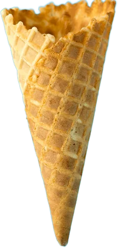
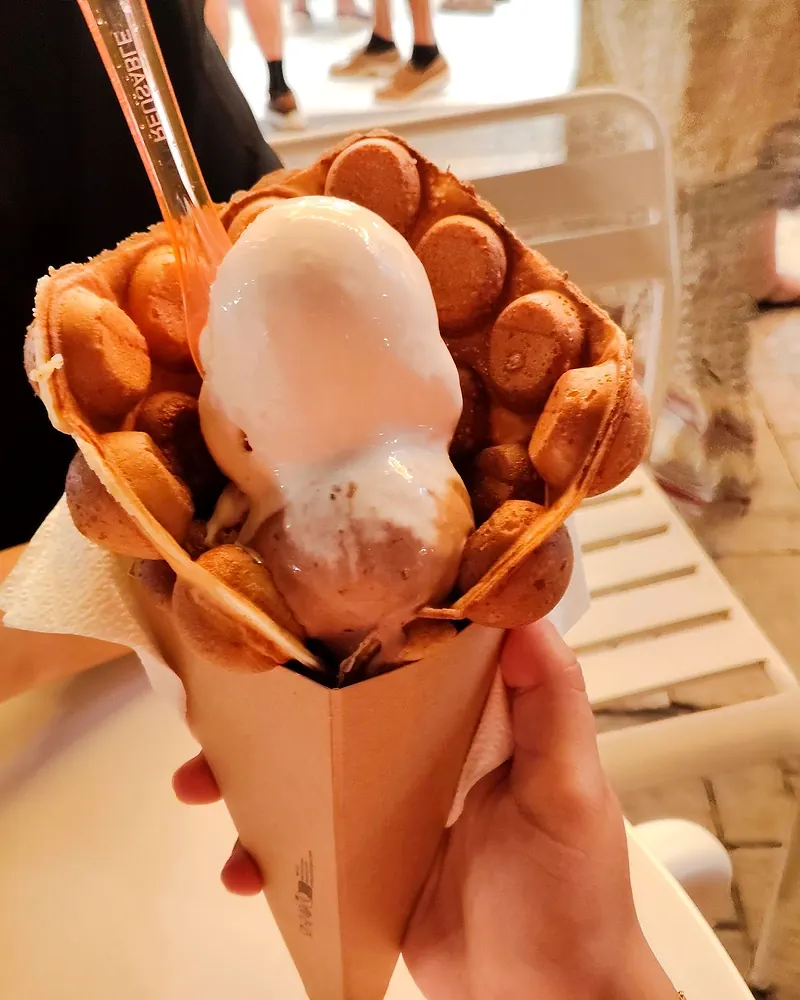
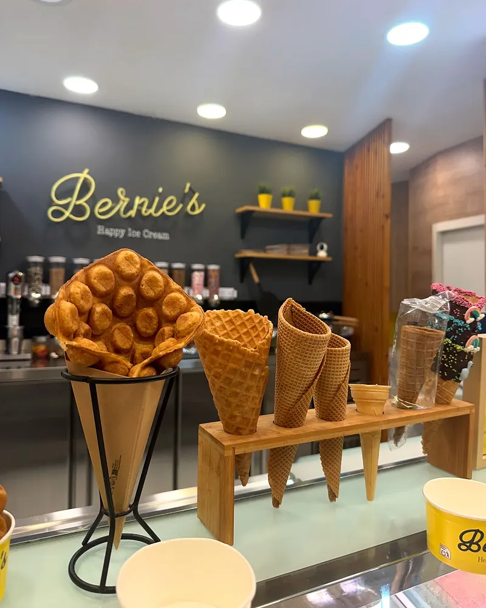
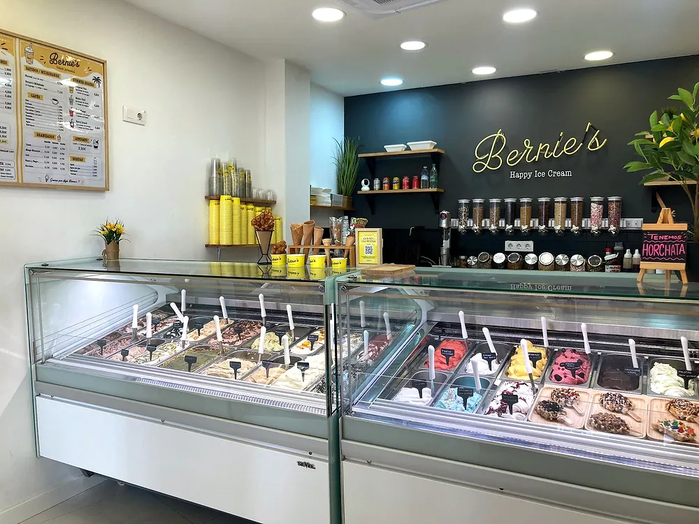
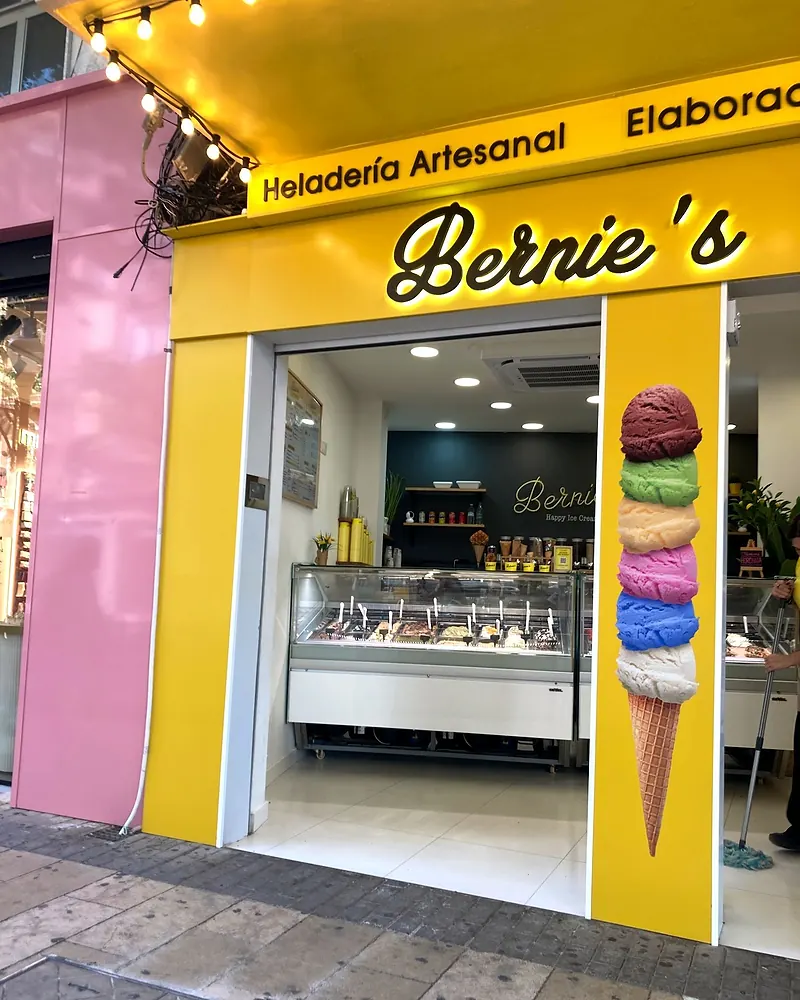

Summer shakes
- Tropical Sungranizado de limón + helado de mango
- Mojito Chillgranizado de limón + helado de mojito
- Pink Mangogranizado de mango + helado de fresa
- Berry Islandgranizado de mango + helado de frutos rojos
Heladería artesanalElaboración propia
Elaboración propia, sabores que cambian con la temporada y un bubble waffle del que no paran de hablar las reseñas.

C/ Marqués de Campo, 51 Dénia
Cómo llegar01 · La vitrina
Siete de los sabores que han pasado por nuestra vitrina (fotos ilustrativas: los sabores rotan con la temporada). Toca dos y monta tu combinación.
También han pasado por la vitrina: leche merengada, Happy Hippo, cheesecake de arándanos y Lotus, coco y maracuyá, dulce de leche, Ferrero, limón, frutos rojos, unicornio, Dubai, Kinder Bueno y, en Navidad, manzana asada.
*Según las etiquetas de la vitrina. Si tienes una alergia o intolerancia, pregunta en el mostrador antes de pedir.
02 · La especialidad
47 reseñas de Google hablan de nuestros gofres. Gofre de burbujas en cono de papel, con el helado dentro.


Almendra caramelizada · Lotus · Galletas Osito · Mini nubes · Chips Ahoy · Ositos Haribo · Cereales · Nata montada · Fresa · Plátano
ChocoGofre · Chocolate blanco · Kinder Bueno · Oreo · Caramelo · Dulce de leche · Fresa · Mango · Leche condensada · Lotus
De la pizarra del local. Algunos solo en temporada. ¿Más pequeño? Pregunta por el Waffle POP (gofre en palo, decorado) y el mini waffle.
03 · La pizarra
Un café y una bola de helado. Lo demás lo pone la tarde.
Los precios están en la pizarra del local y pueden cambiar con la temporada.
Calle abajo,
hasta el puerto.
Marqués de Campo, la calle peatonal de Dénia, termina en el puerto. El helado, por el camino.
04 · La casa
El helado se elabora en el propio local, en Marqués de Campo. Por eso cambia la vitrina con la temporada y por eso, si dudas entre dos, te lo dejamos probar.
Detrás del mostrador: la pared pizarra, el neón amarillo, los toppings en fila y los cucuruchos esperando.

«Son artesanales, hechos por la chica en el mismo establecimiento.»
«La textura es cremosa pero consistente, predomina el sabor elegido pero con un gusto auténtico a nata/leche de trasfondo.»
«Gracias a sus consejos y a darme a probar sus helados he salido de allí […] con la alegría de haber encontrado una heladería a la que volver.»
05 · Visítanos
03700 Dénia · Alicante
